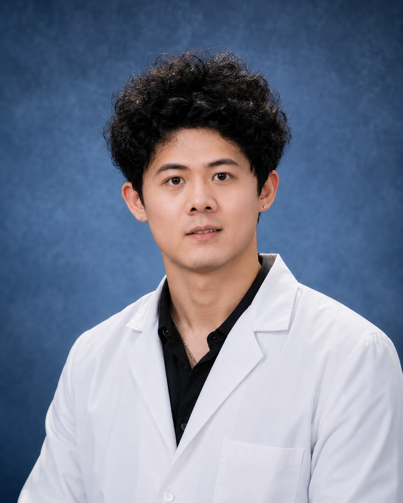

CDMO Environment
Build my career in a client-focused CDMO environment, supporting reliable manufacturing execution, traceability, and cross-functional delivery.

Biotechnology Manufacturing Professional
Oligonucleotide Synthesis | Biomanufacturing | Preliminary Process Troubleshooting
Biotechnology professional with over two years of hands-on experience in automated oligonucleotide and primer synthesis, downstream purification support, reagent preparation, process monitoring, production documentation, and sample and batch traceability.
Professional Summary
I have hands-on experience following SOPs and production instructions for automated oligonucleotide and primer synthesis, downstream purification support, reagent preparation, equipment operation, process monitoring, and production records. My background includes HPLC, MS, and OD result review for process tracking, preliminary troubleshooting, and production scheduling support.
I am open to GMP-regulated biomanufacturing, production, and process-support opportunities. My long-term direction is to grow within a CDMO organization, strengthen my capability in GMP-controlled manufacturing, and contribute to international and cross-functional operations.
Career Direction
Build my career in a client-focused CDMO environment, supporting reliable manufacturing execution, traceability, and cross-functional delivery.
Develop deeper capability in GMP-controlled manufacturing, documentation discipline, deviation awareness, and continuous process improvement.
Contribute to globally oriented teams through clear communication, structured handoffs, and collaboration across functions and locations.
Core Strengths
Automated oligonucleotide and primer synthesis, sequence and sample verification, reagent preparation, and batch organization and priority-based processing.
Ammonia cleavage, acetonitrile washing, TE elution, and related purification workflows for primer production.
Batch records, sample traceability, and HPLC, MS, and OD result review to support process tracking and preliminary process troubleshooting.
Professional Experience
Selected Projects or Problem-Solving Experience
Skills
Education
B.S. in Biotechnology | Sep 2019 - Jun 2023
Relevant coursework: Molecular Biology, Biochemistry, Genetic Engineering, Genetics, Instrumental Analysis, Microbiology.
Target Roles
Contact